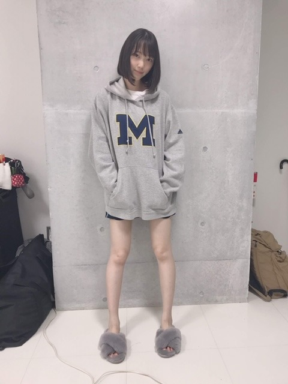

2019/1201Sun自分の服から家の柔軟剤の香りがして安心する瞬間
やほ〜
12月になりました！
もう2019年もラストスパートですね
12月4日...FNS歌謡祭
12月11日...オールナイトニッポン2期生大集合
12月14日.15日...Abema TV乃木坂世界旅
12月27日...Mステ
12月30日...レコード大賞
12月31日...紅白歌合戦
よろしくお願いします。

この間、神戸観光してきました
ハーブ園楽しかったです。
ハーブやお花がたくさんでいちいち可愛くてはしゃいでました！
神戸牛も美味しかったし
チーズフォンデュ、焼き牡蠣、ソーセージ、パン、などたくさん食べました✨

寒いからか、ずっと眠いです...
寝すぎると怠くなるので気をつけなきゃ〜
12月、年末ということで
まえに質問募集したコメント欄から質問すこし返しますね
好きな男性ファッションはどんなのですか？
...セットアップ似合う人オシャレやなって思います！あとはニットとか。シンプルが1番だし柄物は基本好きじゃないです
堀ちゃんは涙袋が綺麗ですけど努力で作れるもんですか？
...元々涙袋はある方ですが強調させるためのメイクはしてます！インスタに近々あげますね
@horimiona_2nd
お風呂 の湯船につかっているときはなにをしてますか〜？
...ボーっと目の前を見ています
女子バレー見てる？
...母が昔から見ていてわたしも見ています
ナイトケアは何をしてますか？
...顔はETVOSの保湿ラインの化粧水、美容液、乳液
たまにパック
体はニベアの美白クリームを塗りたくっています
未央奈ちゃんはもしアイドルではなかったらどんな職業に就きたいですか？
...乃木坂で良かったなって思っていますが子供や動物が好きなので保育士さんかペットサロンの方になりたかったです
あとウエディングプランナーにも興味がありました
プロデュースをしたり人を笑顔にする職業っていいなって
今1番ハマってる食べ物は何ですか？
...やっぱりしょっぱい梅干しが昔から好きですねぇ
ゆなちゃんとよく話す？？
のぎおびでも言ってたから2人でどこか遊び行ってるの見てみたい！
...時々話しかけてきてくれます！カワイイ
鏡を見る度、写真を撮る度に
可愛いなって思いますか？？
これは嫌味じゃなくて！めちゃくちゃ綺麗な人ってどう思うのか気になっただけです！
...アイドルだから自分に自信は持っていたいって思っています常に。でも初期から自信が持てなくてどうしたら自信を持てるようになるかをずっと試行錯誤考えてきました。コンプレックスはメイクでカバーして、服装も自分に合う服を選び続けていくこと、すきな世界観やすきなものを見続けること、自分が劣っていることに対して貪欲になり努力することは大切にしています。何もしなくなったらそこで終了なんです。
ダンスや歌も苦手だったし苦手意識もあったけどまずは苦手意識を持たずに飛び込む勇気と、嫌いなものを好きになることから始めて、気づいたら大好きになっていました。もっと踊りたいし歌いたいなって追求していきたいなって今は思っています。
正直、鏡や写真を見て自分の顔をめちゃかわいい！満足！とは思えないけど、だいすきな母の顔に似ているので自分の顔はとてもすきです。もっともっと可愛くなりたいって思いながら毎日自分磨きを楽しみます！
未央奈の一番好きな天気は！！
...秋の夕方の晴れの日
こんな人気で、まだこんなにブログ更新するのってすごいと思います！
自分の中のポリシーみたいなものですか？
...人気だとも思わないし歴が長くなったから更新しなくなるとかもないです
わたしは乃木坂のメンバーとして加入してからずっとやりがいだったり夢とかが変わってなくて、こうしてブログを出来る限り更新していろんな方との交流をするのが当たり前なことで生きがいでもあるんです。
むしろつまらないブログを見て、コメントしてくださる皆さんには感謝しかないです。。
お気に入りの服のブランドは？
...SNIDEL、FURFUR、FRAYID、H&M、ZARA、ameri、UNIQLO
すきな雰囲気はDIOR、フィリップリム、サンローラン
目標にしてる女性の方はいらっしゃいますか？？
...強くて柔らかくて美しい女性に憧れます
牛肉で言うとヒレのような
乃木坂に入ってからいままで自分の中でここが1番変わったなというところは！
...洋服やコスメなど美容関係がだいすきになりました
入る前はメイクの仕方すらも分からない芋っ子でした。
あと、ポジティブになった！
マイナス思考人間といえば私！でしたもん。笑
どうしようもなく悲しい時はどうしたらいいですか？
...悲しい時って1人で閉じこもりがち。何でわたしだけが...？とか私の辛さなんて誰も分かってくれないってなりませんか？
でもあなただけではなくて人間誰しもが悲しみを経験して越えて生きているので、みんな仲間です。
話を聞いてもらったり甘えてみるのも大事です。周りの人はあなたが思っている以上に頼りにされたい、って思って手を差し伸べてるはずですよ。
リクエストになってしまいますが、初ちゃんの写真がみたいです（ ; ; ）
...わかる人にはわかるMパーカー！

みおなちゃん、自由の彼方やった時のヘアアレンジ教えてください♡
...ねじりゆるハーフアップです
右側と左側にわけて、ぐるんとハーフアップの部分をねじってピンで留めるだけ。毛先は外ハネにしてました！
IUさんを参考にしたよ
今後演じてみたいキャラクターはありますか？(悪女とかゾンビとか)
...悪女！ブライダルウォーズっていう映画を見てコメディ要素もありながら全力女子！みたいな役も楽しそう。メイクやファッションにこだわった役もいいなぁ
arの表紙に選ばれて、今の新しいarでの目標とかありますか？
...女性としてまたパワーアップをして表紙を飾ること。
あとは連載や撮影を通して読者のみなさんと一緒にオンナ度をあげていきたいです！
未央奈ちゃんはもし話せるなら何語話してみたい？
...フランス語！南フランス行ったとき全然分からなくて...
TWICEで誰ペンですか？
...みなさん大好きですが特にミサモペンです〜
先月ブログで仰っていた未央奈、日奈子、みり愛、絢音ちゃんと蘭世で遊んだ話が気になります！
...すっかり忘れてました
お蕎麦を食べに行ってからカラオケに行きました、
お蕎麦を待ってる間はみんなで人狼して楽しかったなぁ
未央奈ちゃんオススメのプチプラコスメってなんですか？
...WHOOMEは全部良すぎて欠かせないし
CANMAKEもハイライトやマットアイシャドウが万能で好きです
空って食べたくなる時ありませんか？この気持ちわかってほしい！！
...空は飲めそうだなって思います
どちらかというと雲を食べたい
スタイル維持のために、特に食生活で気をつけてることって何かありますか？
...ポテチがだいすきでよく食べてるからなんとも言えないのですが、食べすぎたなって思ったら次の日は軽くしたりしてます
あとは血液型毎に合う合わない食材を調べてます
メイクをしたりお洋服を選ぶときは自分のパーソナルカラーを気にしたりしますか？
...自分に合う、合わない色は把握していてなるべく意識してます！わたしはブルベ夏なのでぼやけすぎないように程よい発色感と爽やかさを大切にしています
ではは


コメント(391)
年末忙しいと思うので体調管理気を付けてお仕事頑張ってください！
いつも未央奈ちゃんのブログ楽しみにしてて更新されてると、やった！って思いながら見てます笑 頻繁に更新してくれるので見ているこっちも嬉しいです︎☺︎︎☺︎
悲しみについての質問返しがすごく私の中でストンと落ちてきて、、未央奈ちゃんの考え方すごく好きだし同じだな〜と思いました( ¨̮ ) 今ちょうど苦しい、辛いって思っていたのですが未央奈ちゃんの言葉で少し心が軽くなりました。未央奈ちゃんありがとう。
忙しいと思うのにこんなに質問返ししてくださってありがとうございます！ いつかでいいのですが、、昔やってた女の子のためのブログもためになるしめっちゃくちゃ好きなのでやって欲しいです！！
これから年末にかけて忙しくなると思いますが身体に気をつけて頑張ってください( •̀ᴗ•́ )و これからも応援してます(^^)
御疲れ様でした！
12月だよね、2019は素晴らしかった。
そして、来年には多くの物が楽しみにしています。
何時も頑張って下さい、
常に必ずしても応援しています。
どうか御身体に気を付けて下さい！
ずっと大好き！
毎日忙しいと思うけど頑張ってねー‼️
紅白絶対見るからね！体調には気をつけて
忙しい中でもリフレッシュする時間があって良かった。
質問の受け答え方素敵です
親しみ感じました☺︎
微力ですが応援してますね
自分も努力しないといけないと思いました
未央奈ちゃんが努力してることファンにも伝わってるよ
質問たくさん答えててすごい、、、
内容もしっかりと納得するような答えでさすが未央奈だなって思いました...(⁰︻⁰)
インスタとかのコスメの投稿とかすっごい参考になるし、ほんとに最高すぎる、、、
ブログの頻度も高いし内容もちゃんと濃いし...
こういうコツコツ努力してきた未央奈ちゃんは絶対この努力は無駄にならないんだろうなって思っています。絶対無駄じゃないなって。
だからわたしもそういう努力できる人になります！！
ありがとう|•'-'•)و✧
ブログ更新ありがとう～
いつも楽しみに見てコメさせてもらってるよ
ほりっぴ～の自分に正直なブログがめっちゃ好き
最初からブレないファン想いだよね
ブレずに推します
今回の質問返しを見て、
更に未央奈のことを知ることができて嬉しかったよ。
今年もあっという間に１２月だね。
今年最後の月も未央奈が登場するシーンがたくさんあるみたいだから
本当に楽しみだ～！
これから年末年始に向けて忙しくなると思うけど、
体調には気を付けて、2019年最後の一瞬一瞬を楽しんでね！
ブログの更新の話が質問にありましたが、他のほとんどのメンバーはモバメとか755がメインなのかブログの更新が滅多に無いんですよね(´・ω・`)
自分はモバメも755も取ってないからブログをこまめに更新してくれる未央奈ちゃんには感謝しか無いです( ＾∀＾)
年末にかけての音楽番組ラッシュで大変だと思うけど身体に気をつけて頑張ってね( ＾∀＾)
12月も盛り沢山だね(〃^ー^〃)
１日１日を楽しみましょう
またパワー届けるよ!
パーカー似合うd(⌒ー⌒)!
明日もHAPPYを
お休みなさい(^-^ゞ
久しぶりにパディントン観てから寝ようっと笑
それでは今週も頑張って行きましょう・・・。
たくさん質問に答えてくれて嬉しい！メイクのこととか詳しくてすごいです！ブログも全然更新頻度変わらないから毎日楽しみに待てるんだ〜
これから年末年始に向けて歌番組がいっぱいあるから楽しみです！！
頑張ってください！
もう12月だからあったかくして過ごしてね！風邪引いたら大変！
毎日絶対大変なはずなのに、インスタの投稿も凄く多いし、ブログの更新度も多いし、ファンとして、自分の推しとして本当に凄く尊敬してます。「当たり前なことであり、生きがいでもある。」こんな素晴らしい事を言えるような大人になりたいなって心から思っています！ 今日の乃木中、まなったんは「乃木坂にとってどんな存在か⁇」で「出川さん」って書いてたの笑いました また更新待ってます！
写真で持ってるのはプレッツェルでしょうか。沢山嗅いで沢山食べて沢山リフレッシュできたみたいで良かったです。
あとプティ君は目つぶってる写真を中々取らせてくれない印象ですね。
ブログ更新した上に質問返しまでして堀さんは本当に偉いです。
...が間を表してるみたいで面白いですね。
堀さんといえば不屈の前向きさでお馴染みですけど、それは乃木坂に入ってからのことだったんですね。先日劇場で見た「ファイティングファミリー」って映画が女性主人公がプロレスラーでスターになる話で結構好きだったんですけど、見てるうちに「堀さんも表に出さない辛いこと沢山有るんだろうなあ」なんて考えてしまって、マイナス思考がポジティブになるまでに、全身骨太になるまでにどれだけの骨折とどれだけの治療を乗りこえてきたんだろう、なんてことを考えてしまいました。
鼻水と喉の痛み大丈夫でしょうか？眠いのは身体が休みたがってるのかもしれないです。脂肪つけてないと風邪ひきやすいらしいので大変ですよね。芋っ子のポテトもヒレ美女のヒレ肉も全部食べて栄養にしつつ、こまめに飲みもの飲んで喉湿らしつつ、年明けまで頑張ってください。
ブログちゃんと最初から最後まで読みました(当たり前)
未央奈のブログはつまらなくないぞ～
ちゃんと毎回読んでるけど結構面白いぞ～
これからも期待してます。
フランス語、３年間くらい勉強してたなぁ～
めちゃくちゃ難しいよ(笑)
でも楽しいから言語を勉強するならフランス語をおすすめするかな～
おやすみおな。
今年も残り少ないけど、年末までお互いがんろうね！！
レコ大、紅白と楽しみにしてるよ！
毎回忙しいのに、ブログ更新してくれたり質問こたえてくれたりしてくれてありがとうね！
堀ちゃんのそういうところホントに尊敬する！
あと、お母さんと顔似てるのが好きっていうコメントも好きなのはもちろん優しさがにじみ出てるなって思った。
これからも応援してるから、体調に気を付けて、堀ちゃんらしく頑張ってね！！
お洒落の話の中に梅干し好きの話題が落ち着きます。
お母様に似てるんですね。
お母様も色白で大変お綺麗なのでしょうね
神戸旅行でリフレッシュして
お仕事頑張ってください！毎日癒されてます！
プティ君に負けないくらいみおなちゃんが可愛い。
十二月に入りました。先生方も走り回るという師走ですよ。慌ただしい年の瀬ですが、一年締めくくりの日の紅白歌合戦まで、まだまだ音楽番組目白押し。楽しい年末にいたしましょう。
質問返したくさん、ありがとうございます。一問一答の積み重ねで、その人となりがよりわかってさらに親しみが湧くものです。これからも折りにふれ、堀さんからいろいろな答えを聞きたいな。
ではまたコメントします。今週も元気にがんばりましょう。
さらばだ、また会おう！（気球に乗って去りぬ〜）
すごく真剣に物事に取り組んでるのが、伝わる読んでいてスッキリするブログだなって思います。
未央奈の握手会は一回しか行ったことがないけど…。握手会も大切にしているのかなって思いました。そのときは、次はいいかなって思ってしまった自分が恥ずかしいです。
でも、2期生だけでなく乃木坂の若手エースになってると感じます。
2期生の単独ライブが見てみたいです。
1,2期生のライブも。また。
これからも応援してます。
乃木坂が出演する番組全部
チェック済みだし、
これからの番組も全部見るよ!!
寒いけど頑張って!!
凄く頑張ってるのをちゃんと見てるよ
堀ちゃんの事も大好きです
可愛いし、美少女だし
自信を持って頑張って下さい
未央奈ちゃんの私服とか見てみたいですっ
もう12月だねー！
今月も乃木坂ちゃん テレビでたくさん観れるね！
ちゃんと全部チェックするね！
特に世界旅とANNが楽しみ(^o^)
しかし、
未央奈ちゃんの美の追求はスゴいなぁって思う。
信念もちゃんと持ってて尊敬するよ！
そして、そんな未央奈ちゃんが大好きです！
ではでは～
今日も素敵な１日を。
先日の逃走中お疲れ様でした〜！未央奈ワールド全開で笑えました 走ってる姿も可愛かった
いつまでも応援してるので、今の乃木坂も、来世の乃木坂も引っ張っていってください！大好きです
出演番組了解です。お知らせ有り難うございます。未央ちゃん応援してます。
工事中や歌番組欠かさず見てます
今年もあと1ヶ月切りましたね〜早いもんです。
令和元年もあっとゆう間に終わりですね。
12月は乃木坂にとって歌番組出演が立て続けで大変な月ですが、今は寒く体調崩し易い時期なんで体調には気を付けて充実した毎日を過ごして下さい！
我らファンにとって乃木坂の姿を沢山見れる時期でもあるので、嬉しい時期でもありますね
今後堀ちゃんは神戸以外に行ってみたい場所はあるんですか？？
僕は遠方に行ける余裕無いんで、毎週の休日は都内のtrain.gif:乗ってレトロ銭湯に行ってます！
全部見たよ〜！！
面白かった！
やっぱり未央奈はすごい人だよ！
改めて感じました。好きです。
これからも応援します！！！
ではは
ブログの写真に掲載されていた未央奈ちゃんの着用していたM表記のパーカーと大胆な生足はを見せた短パン姿はとても魅力的でした❗ ♥️。
あとは12月からは4日と11日生放送のFNS歌謡祭・11日オールナイトニッポン2期生大集合・14日.15日...Abema TV乃木坂世界旅・27日 Mステスーパーライブ・30日...レコード大賞・31日 紅白歌合戦などのハードな1ヶ月となるので未央奈ちゃんも健康第一で頑張ってください❗ 。
僕も未央奈ちゃんと乃木坂46の皆様を応援しています♥️。
このブログを読んで未央奈ちゃんのことがもっと好きになりました！未央奈ちゃんの努力家で優しいとこ尊敬してます。
年末の歌番組絶対観ます！寒いので体調に気をつけてくださいね
神戸のハーブ園行ったんだねー！
この時期のハーブは、
刺さるほど冷たくもなく、
でも研ぎ澄まされた空気の中を
優しくて柔らかく香ってる感じかな？
神戸はほんといい街だよねー^_^
今度行くときは有馬温泉もぜひぜひ！
質問へのたくさんの回答、
うれしい！
ブログ、いつも楽しみにしてるよ！
俺もしょっぱい梅好き！
その梅の塩分22％！
やほー
あぁ～～今年も、もうおわたーーも同然(;´д｀)
みお造もラストスパートいきまっせーーー！
怒涛の年末音楽番組
えい えい おーーー＼(^-^)
お大事にね
※みおちが参戦するからと逃走中を録画して観たよ(他の子ぉやったらそもそも観いひんかったかもやで？(^ ^))。まず可愛かった、そしてちょいちょい面白かった、確保のされ方がなんだか妙に可愛く思えた。楽しかったよ、ありがとうね♪(^ ^)
コメントする